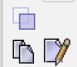
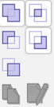
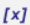
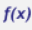
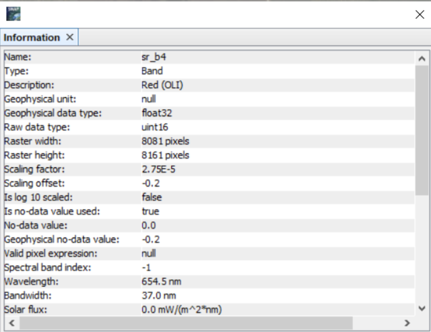
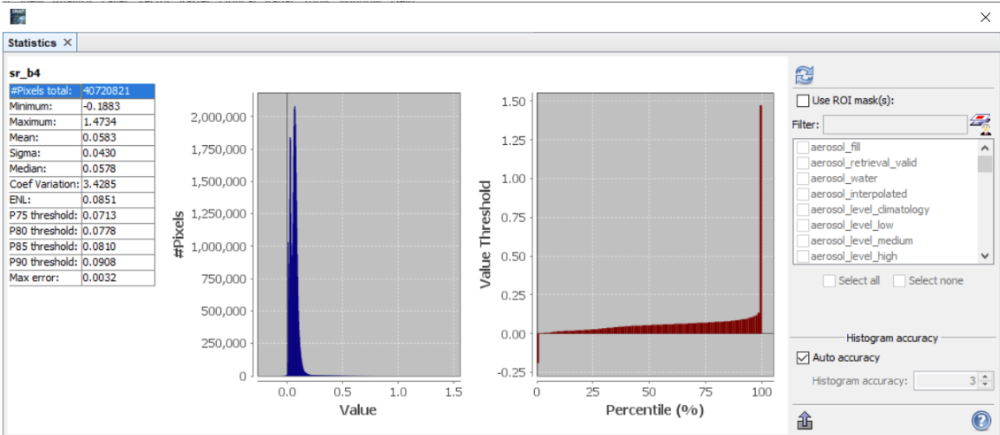
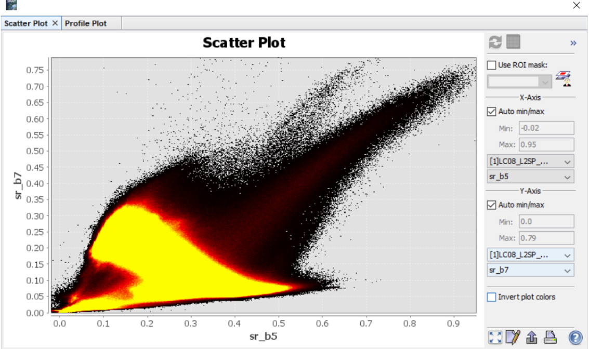
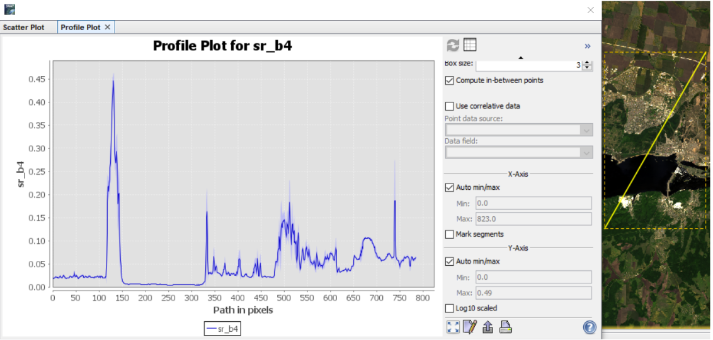
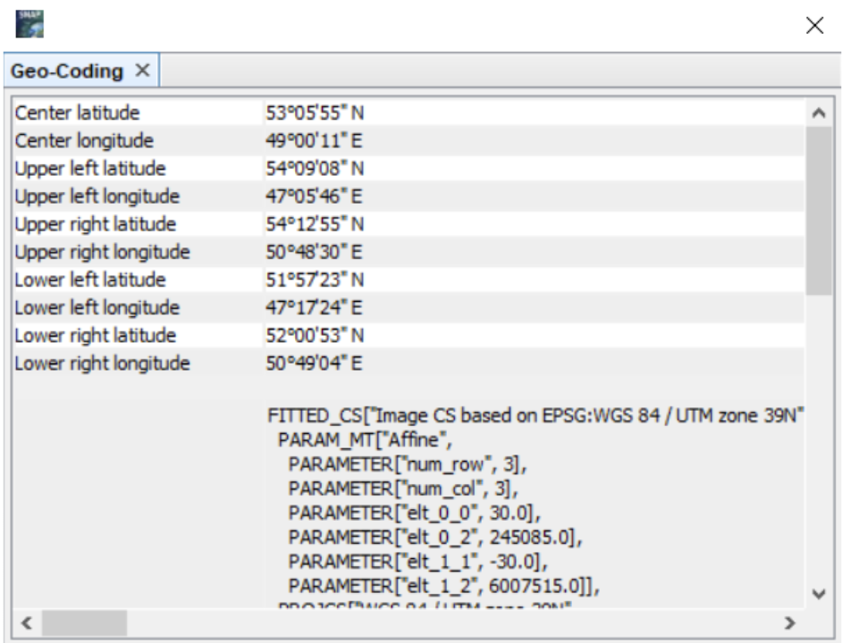
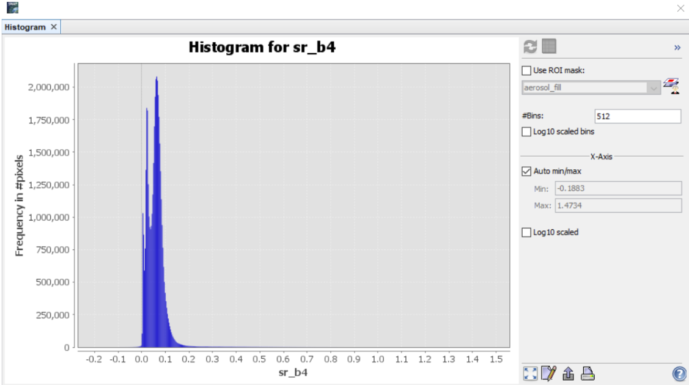

Class 2 Calculation of Optical Images Data
Class objectives:
- Sea and Land masking of Raster Data
- Raster Calculations by SNAP Tools and by your own formulas
- Exploring basic analysis tools and Thematic Processors
This lesson focuses on basic skills for working with optical images. Once you have learnt what SNAP is, what it is for and how to load and open optical images, you need to learn how to perform basic operations with them. First of all, you may need pixel masking, basic index calculation, basic analysis tools, image calculator and thematic processors.
2.1. Sea and Land Masking
In this part, we will familiarise ourselves with the elements for masking. Work with masks is carried out through a special window: “Mask manager”. You can open this window through View -> Tool Windows -> Mask Manager.
Mask Manager Window
In this window you can interact with the image masks. You can customise the visibility of masks by ticking the checkbox in the column You can also customise the mask layer name, colour, transparency and description.
If you have one mask layer selected, the following options are available These tools allow you to: copy, edit, remove, transfer the selected mask to other products, import, export, zooms to selected masks. If you have multiple layers selected, you can't copy and paste, but you can use the geoprocessing tools These are the tools that make it possible: creates the union, intersections, the difference (top and down) and complement.
You can create your own mask by selecting a polygon with the digitising tool .
Also you can create a mask built over the range of the band . The minimum and maximum value of the range is specified here. The brightnesses in the range will be sampled and a mask matching this condition will be created. Raster could be masked by logical mathematical expression .
Range Mask Creation Window
If the imported dataset has not preprocessed land or water masks, SNAP can compute them by integrated tool Land/sea mask. In Processing Parameters choose bands, which will take part in mask computing.
Land/Sea Mask Window
Result of Land/Sea Mask Tool
You can calculate statistics by mask, using the tool Compute mask area
2.2. Raster Calculations by SNAP Tools
A frequently used tool in this work is the use and construction of index images. Index images can be part of analyses of various phenomena expressed on the Earth's surface. There are a large number of such indices that engage different spectral channels of images.
The indices are located in the tab “optical”, in thematic land processing and thematic sea processing. Consider the vegetation radiometric indices. For example, the second tab has the familiar NDVI vegetation index. To apply the NDVI formula you simply select the red and near infrared channel of the shot in the menu.
NDVI Tool Window
As a result, we get the NDVI image relatively quickly and easily. Using the “Colour manipulation” window we can adjust the colour representation of the image, assigning convenient colours and a range of values.
Result of NDVI Tool: the greenest areas have more vegetation
Another example of SNAP Tools is MSAVI index (Modified Soil Adjusted Vegetation Index), which is calculating by the following formula \(\frac{2 NIR + 1 - \sqrt{(2 NIR + 1)^2 - 8 (NIR - RED)}}{2}\)
Pre-prepared formulas are convenient for quick reusability, as well as in multi-step processes built in graph builder (it will be described in the next lessons).
2.3. Raster Calculations by SNAP Tools
In certain cases, existing indices are not sufficient. There are cases when you need to count non-index images, for example for masking or other operations. The Raster Calculator allows you to perform mathematical operations with image pixels on individual bands. In the SNAP software, this functionality is performed in the Band maths function. You can call this up via the Raster tab.
In the main menu you can set general parameters, to write a degeneration you need to go to the expression editing window by clicking on the button. In this window, select the product to which the formula is applied, the data source (i.e., the image channel), and the list of operations (functions, constants, and operators). On the right side you need to enter your expression. It is possible to save and load expressions, so that you don't have to re-enter them, especially if they are frequently used.
Band Maths Tool and Expression Editor
The example above shows the Coloration Index formula \(\frac{RED - BLUE}{RED}\), which is not in the standard toolboxes. Therefore, you must enter the formula yourself. If you plan to use the formula several times, or in ModelBuilder, you can save this formula via the save button. To reuse it, you need to click load and find the location of the file with the formula. The formula is saved with the extension *.txt.
2.4. Analysis Tools
Basic analytics tools can be useful for deep analysis of satellite imagery, determining decoding features and defining classification algorithm. The analysis tab has the following items:
-
Information. The ‘information’ tool outputs various information about the image, which is taken from metadata files
Information Window
-
Statistics. This tool outputs statistical information about the raster. Basic statistical parameters are calculated as well as graphs
Statistics Window
-
Scatter plot. This tool allows you to plot a graph between the values of two images. The graph can help to identify patterns or relationships between different images.
Scatter Plot Window
-
Profile plot. Having created a line, you can plot the brightness of the pixels along which the line passes. You can select a channel and see the differences along the path.
Profile Plot Window
-
Geo-Coding. Displays the geometric properties of the image
Geo-Coding Window
-
Histogram. The tool creates a histogram of the distribution of the number of pixels by brightness values.
Histogram Window
2.5. Thematic Processors
SNAP software contains toolboxes with special processes such as biophysical, soil, water and others. Using biophysical processes and Landsat data as examples, LAI, FAPAR, FVC can be calculated.
biophysical Processor for LandSat 8 Tool
- LAI (Leaf Area Index) is a biophysical indicator that characterises the total amount of leaf area of vegetation per unit of land area. It is expressed as the ratio of the total leaf area (in square metres) to the land area (in square metres) on which the leaves are located. LAI is needed for ecosystem monitoring, agriculture, water management, environmental studies. The LAI calculation is based on NDVI and EVI using empirical coefficients.
- FAPAR (Fraction of Absorbed Photosynthetically Active Radiation) is a biophysical index that characterises the fraction of photosynthetically active radiation (FAR, range 400-700 nm) absorbed by vegetation for photosynthesis. This index is important for assessing plant productivity and its role in the global carbon cycle. FAPAR indicates how efficiently vegetation absorbs the solar energy needed for photosynthesis.
- FVC (Fractional Vegetation Cover) is a biophysical index that characterises the proportion of land surface area covered by green vegetation within a given area. It is expressed as a fraction (0 to 1) or as a percentage (0% to 100%). FVC estimates the extent of vegetation cover, ignoring areas occupied by soil, water or other objects. This index is used for agriculture, vegetation monitoring, and natural resource management.
Tasks & Questions
Questions:
- What methods of masking do you know?
- What baseline analysis tools are you aware of and what do they do?
- Which group of thematic processes does LAI belong to, what is their essence?
| Shiryaev M. et. al SNAP Course for Specialists. Moscow: Department of Geography, MSU, 2024. |